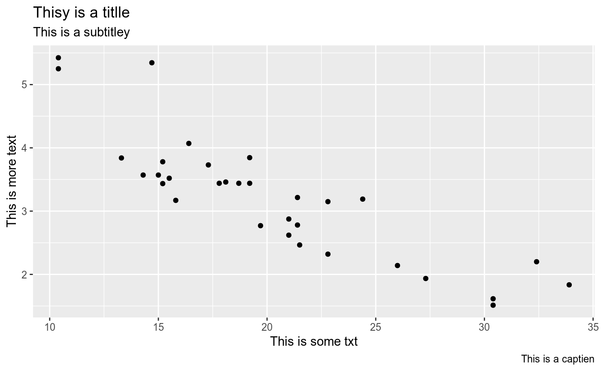

gg_check.RdDue to the way ggplot2 objects are created, this has to be used in a standalone context.
gg_check(gg, dict, ignore)
| gg | ggplot2 object |
|---|---|
| dict | a dictionary object or string which can be passed to hunspell::dictionary.
Defaults to |
| ignore | character vector with additional approved words added to the dictionary.
Defaults to |
the object that was passed in
Current functionality only looks for misspelled words in the labels of ggplot2 objects. When misspelled words are found, a message is printed with the words and the label that they are in. No messages will be printed if there are no misspelled words.
library(ggplot2) df <- data.frame(x=c(20, 25, 30), y=c(4, 4, 4), txt=c("One", "Two", "Three")) # not piping ggplot(mtcars, aes(mpg, wt)) + geom_point() + labs(x="This is some txt", y="This is more text", title="Thisy is a titlle", subtitle="This is a subtitley", caption="This is a captien") -> gg gg_check(gg)#>#>#>#>#>